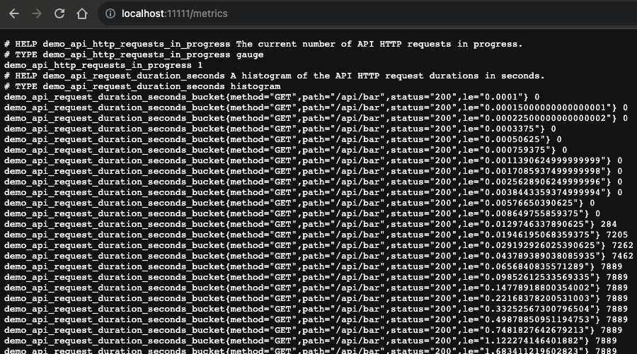
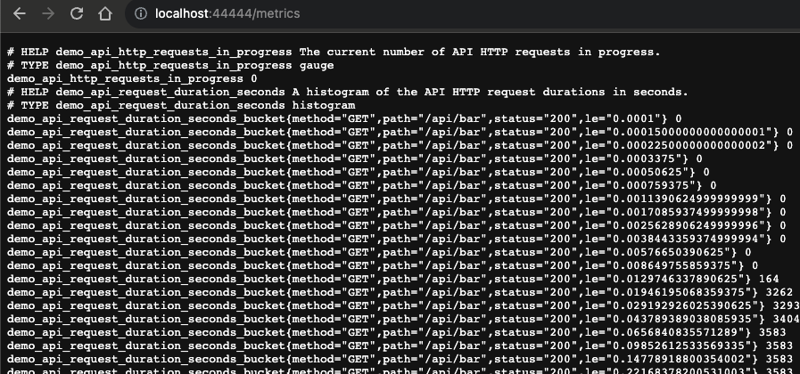

Service discovery - Exercise infrastructure
You'll be setting up the following architecture to support your service discovery exercises
using the services demo to ensure your local infrastructure contains the following:
Note that if you have any port conflicts on your machine, you can use any free port numbers you like, just adjust the rest of this workshop lab as you work through.
- Production 1 running at
http://localhost:11111 - Production 2 running at
http://localhost:22222 - Development running at
http://localhost:44444
Note that if you have any port conflicts on your machine, you can use any free port numbers you like, just adjust the rest of this workshop lab as you work through.
Services demo - Installing and running
To install the services demo we're providing a self-contained project you can download, unzip,
and run an installation script to quickly get started. Just follow these easy steps:
- Download and unzip the Prometheus Services Demo Installer.
- Run 'init.sh' file.
- Don't follow the instructions in the terminal output to start the services as you'll be modifying the default ports on startup.
Services demo - Download and unzip
Once you have downloaded the project using the link provided previously, just unzip into its
own directory as shown (Note: examples shown are on Mac OSX system):
$ unzip prometheus-service-demo-installer-v1.0.zip
creating: prometheus-service-demo-installer-v1.0/
inflating: prometheus-service-demo-installer-v1.0/.gitignore
inflating: prometheus-service-demo-installer-v1.0/README.md
creating: prometheus-service-demo-installer-v1.0/docs/
creating: prometheus-service-demo-installer-v1.0/docs/demo-images/
inflating: prometheus-service-demo-installer-v1.0/docs/demo-images/workshop.png
inflating: prometheus-service-demo-installer-v1.0/init.sh
creating: prometheus-service-demo-installer-v1.0/installs/
inflating: prometheus-service-demo-installer-v1.0/installs/README
creating: prometheus-service-demo-installer-v1.0/installs/demo/
inflating: prometheus-service-demo-installer-v1.0/installs/demo/Buildfile
inflating: prometheus-service-demo-installer-v1.0/installs/demo/Dockerfile
inflating: prometheus-service-demo-installer-v1.0/installs/demo/LICENSE
inflating: prometheus-service-demo-installer-v1.0/installs/demo/README.md
...
creating: prometheus-service-demo-installer-v1.0/support/
extracting: prometheus-service-demo-installer-v1.0/support/README
inflating: prometheus-service-demo-installer-v1.0/support/unzip.vbs
inflating: prometheus-service-demo-installer-v1.0/support/workshop-prometheus.yml
Services demo - Exploring the installer
Now change into the project directory explore the demo source code found in the installation
directory as show. This is the code that the installer will build automatically:
$ cd prometheus-service-demo-installer-v1.0
$ ls -1
README.md
docs/
init.sh
installs/
support/
$ ls installs/demo/
Buildfile LICENSE Dockerfile README.md api.go
batch.go client.go cpu.go crossbuild.sh disk.go
go.mod go.sum holiday.go intermittent_metric.go
main.go memory.go
Services demo - Run installation script
Time to build this project, so let's run the init script to build the services
project. Run the command below and see the next slide for the output and explanation:
$ init.sh
Services demo - Installation introduction
The installation starts off with a nice ascii art sign to let you know you are about to install
the services project:
##########################################################################
## ##
## Setting up the Prometheus Service Demo Installer ##
## ##
## #### #### ### # # ##### ##### # # ##### # # #### ##
## # # # # # # ## ## # # # # # # # # ##
## #### #### # # # # # ### # ##### ### # # ### ##
## # # # # # # # # # # # # # # # ##
## # # # ### # # ##### # # # ##### ### #### ##
## ##
## #### ##### ##### # # ##### #### ##### ##
## # # # # # # # # # ##
## ### ### ##### # # # # ### ##
## # # # # # # # # # ##
## #### ##### # # # ##### #### ##### ##
## ##
## #### ##### # # ### ##
## # # # ## ## # # ##
## # # ### # # # # # ##
## # # # # # # # ##
## #### ##### # # ### ##
## ##
## ##### # # #### ##### ### # # ##### ##### ##
## # ## # # # # # # # # # # ##
## # # # # ### # ##### # # ### ##### ##
## # # ## # # # # # # # # # ##
## ##### # # #### # # # ##### ##### ##### # # ##
## ##
## brought to you by Eric D. Schabell ##
## ##
## git@gitlab.com:o11y-workshops/prometheus-service-demo-installer.git ##
## ##
##########################################################################
Services demo - Testing and building
Next the installer tests if you have GO installed and a valid version, if not you are pointed
to where to install it. In this example you see that it's a valid version of Go so it continues
on to build the services demo code:
Checking for Go version needed:
Go major version is good...
Go minor version is good...
Your Go version 1.21 accepted!
Building the services...
Prometheus service project built successfully!
Services demo - Completed building
If all goes well you have now seen the following successful build message with pointers to how
to run the services demo binary (AGAIN, DON'T START THIS YET) you built, but we'll be
starting it on a non-default port next:
======================================================
= =
= Installer complete, get ready to rock! =
= =
= The Prometheus services can be started from a =
= terminal with the following command: =
= =
= $ ./installs/demo/services_demo =
= =
= You can make sure the service is running by =
= viewing the exported metrics at: =
= =
= http://localhost:8080/metrics =
= =
======================================================
Service discovery - Starting production 1
Now it's time to start the first production services demo environment, but not on the default
port, we want this to be on port 11111. To do that execute the following from your services
demo project:
$ ./installs/demo/services_demo --listen-address :11111
Service discovery - Testing production 1
After starting the services binary, it should have metrics scraping end points available so that
you can query them with PromQL. Test this at
http://localhost:11111/metrics:

Service discovery - Starting production 2
Now we can create our second production services demo environment, but we want this to be on
port 22222. To do that open a new console window and execute the following from your services
demo project:
$ ./installs/demo/services_demo --listen-address :22222
Service discovery - Testing production 2
After starting the services binary, it should have metrics scraping end points available so that
you can query them with PromQL. Test this at
http://localhost:22222/metrics:

Service discovery - Starting development
Now we can create our final development services demo environment, but we want this to be on
port 44444. To do that open a new console window and execute the following from your services
demo project:
$ ./installs/demo/services_demo --listen-address :44444
Service discovery - Testing development
After starting the services binary, it should have metrics scraping end points available so that
you can query them with PromQL. Test this at
http://localhost:44444/metrics:

Service discovery - Prometheus setup assumptions
The rest of this exercise will focus on configuration of your Prometheus instance. For this path
of the service discover infrastructure setup, it is assumed you chose in the previous lab to
install Prometheus from binary sources, and have
done that.
Make sure you have a running instance and we'll pick up at editing the
Make sure you have a running instance and we'll pick up at editing the
workshop-prometheus.yml file and if you have not created one, you can create
a new one from scratch in the rest of this lab.
Service discovery - This completes setup from source
Next up, we'll start using the file-based service discovery mechanism to feed a changing list
of custom targets to Prometheus during runtime and verify that it's dynamically discovering the
changes: